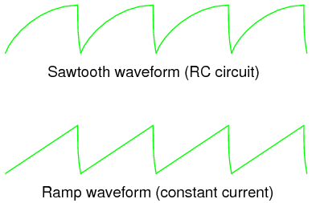
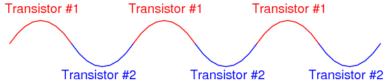

Analog circuits are circuits dealing with signals free to vary from zero to full power supply voltage. This stands in contrast to digital circuits, which almost exclusively employ "all or nothing" signals: voltages restricted to values of zero and full supply voltage, with no valid state in between those extreme limits. Analog circuits are often referred to as linear circuits to emphasize the valid continuity of signal range forbidden in digital circuits, but this label is unfortunately misleading. Just because a voltage or current signal is allowed to vary smoothly between the extremes of zero and full power supply limits does not necessarily mean that all mathematical relationships between these signals are linear in the "straight-line" or "proportional" sense of the word. As you will see in this chapter, many so-called "linear" circuits are quite nonlinear in their behavior, either by necessity of physics or by design.
The circuits in this chapter make use of IC, or integrated circuit, components. Such components are actually networks of interconnected components manufactured on a single wafer of semiconducting material. Integrated circuits providing a multitude of pre-engineered functions are available at very low cost, benefitting students, hobbyists and professional circuit designers alike. Most integrated circuits provide the same functionality as "discrete" semiconductor circuits at higher levels of reliability and at a fraction of the cost. Usually, discrete-component circuit construction is favored only when power dissipation levels are too high for integrated circuits to handle.
Perhaps the most versatile and important analog integrated circuit for the student to master is the operational amplifier, or op-amp. Essentially nothing more than a differential amplifier with very high voltage gain, op-amps are the workhorse of the analog design world. By cleverly applying feedback from the output of an op-amp to one or more of its inputs, a wide variety of behaviors may be obtained from this single device. Many different models of op-amp are available at low cost, but circuits described in this chapter will incorporate only commonly available op-amp models.
PARTS AND MATERIALS
This experiment only requires a single operational amplifier. The model 1458 and 353 are both "dual" op-amp units, with two complete amplifier circuits housed in the same 8-pin DIP package. I recommend that you purchase and use "dual" op-amps over "single" op-amps even if a project only requires one, because they are more versatile (the same op-amp unit can function in projects requiring only one amplifier as well as in projects requiring two). In the interest of purchasing and stocking the least number of components for your home laboratory, this makes sense.
CROSS-REFERENCES
Lessons In Electric Circuits, Volume 3, chapter 8: "Operational Amplifiers"
LEARNING OBJECTIVES
SCHEMATIC DIAGRAM
ILLUSTRATION
INSTRUCTIONS
A comparator circuit compares two voltage signals and determines which one is greater. The result of this comparison is indicated by the output voltage: if the op-amp's output is saturated in the positive direction, the noninverting input (+) is a greater, or more positive, voltage than the inverting input (-), all voltages measured with respect to ground. If the op-amp's voltage is near the negative supply voltage (in this case, 0 volts, or ground potential), it means the inverting input (-) has a greater voltage applied to it than the noninverting input (+).
This behavior is much easier understood by experimenting with a comparator circuit than it is by reading someone's verbal description of it. In this experiment, two potentiometers supply variable voltages to be compared by the op-amp. The output status of the op-amp is indicated visually by the LED. By adjusting the two potentiometers and observing the LED, one can easily comprehend the function of a comparator circuit.
For greater insight into this circuit's operation, you might want to connect a pair of voltmeters to the op-amp input terminals (both voltmeters referenced to ground) so that both input voltages may be numerically compared with each other, these meter indications compared to the LED status:
Comparator circuits are widely used to compare physical measurements, provided those physical variables can be translated into voltage signals. For instance, if a small generator were attached to an anemometer wheel to produce a voltage proportional to wind speed, that wind speed signal could be compared with a "set-point" voltage and compared by an op-amp to drive a high wind speed alarm:
PARTS AND MATERIALS
CROSS-REFERENCES
Lessons In Electric Circuits, Volume 3, chapter 8: "Operational Amplifiers"
LEARNING OBJECTIVES
SCHEMATIC DIAGRAM
ILLUSTRATION
INSTRUCTIONS
In the previous op-amp experiment, the amplifier was used in "open-loop" mode; that is, without any feedback from output to input. As such, the full voltage gain of the operational amplifier was available, resulting in the output voltage saturating for virtually any amount of differential voltage applied between the two input terminals. This is good if we desire comparator operation, but if we want the op-amp to behave as a true amplifier, we need it to exhibit a manageable voltage gain.
Since we do not have the luxury of disassembling the integrated circuitry of the op-amp and changing resistor values to give a lesser voltage gain, we are limited to external connections and componentry. Actually, this is not a disadvantage as one might think, because the combination of extremely high open-loop voltage gain coupled with feedback allows us to use the op-amp for a much wider variety of purposes, much easier than if we were to exercise the option of modifying its internal circuitry.
If we connect the output of an op-amp to its inverting (-) input, the output voltage will seek whatever level is necessary to balance the inverting input's voltage with that applied to the noninverting (+) input. If this feedback connection is direct, as in a straight piece of wire, the output voltage will precisely "follow" the noninverting input's voltage. Unlike the voltage follower circuit made from a single transistor (see chapter 5: Discrete Semiconductor Circuits), which approximated the input voltage to within several tenths of a volt, this voltage follower circuit will output a voltage accurate to within mere microvolts of the input voltage!
Measure the input voltage of this circuit with a voltmeter connected between the op-amp's noninverting (+) input terminal and circuit ground (the negative side of the power supply), and the output voltage between the op-amp's output terminal and circuit ground. Watch the op-amp's output voltage follow the input voltage as you adjust the potentiometer through its range.
You may directly measure the difference, or error, between output and input voltages by connecting the voltmeter between the op-amp's two input terminals. Throughout most of the potentiometer's range, this error voltage should be almost zero.
Try moving the potentiometer to one of its extreme positions, far clockwise or far counterclockwise. Measure error voltage, or compare output voltage against input voltage. Do you notice anything unusual? If you are using the model 1458 or model 353 op-amp for this experiment, you should measure a substantial error voltage, or difference between output and input. Many op-amps, the specified models included, cannot "swing" their output voltage exactly to full power supply ("rail") voltage levels. In this case, the "rail" voltages are +18 volts and 0 volts, respectively. Due to limitations in the 1458's internal circuitry, its output voltage is unable to exactly reach these high and low limits. You may find that it can only go within a volt or two of the power supply "rails." This is a very important limitation to understand when designing circuits using operational amplifiers. If full "rail-to-rail" output voltage swing is required in a circuit design, other op-amp models may be selected which offer this capability. The model 3130 is one such op-amp.
Precision voltage follower circuits are useful if the voltage signal to be amplified cannot tolerate "loading;" that is, if it has a high source impedance. Since a voltage follower by definition has a voltage gain of 1, its purpose has nothing to do with amplifying voltage, but rather with amplifying a signal's capacity to deliver current to a load.
Voltage follower circuits have another important use for circuit builders: they allow for simple linear testing of an op-amp. One of the troubleshooting techniques I recommend is to simplify and rebuild. Suppose that you are building a circuit using one or more op-amps to perform some advanced function. If one of those op-amps seems to be causing a problem and you suspect it may be faulty, try re-connecting it as a simple voltage follower and see if it functions in that capacity. An op-amp that fails to work as a voltage follower certainly won't work as anything more complex!
COMPUTER SIMULATION
Schematic with SPICE node numbers:
Netlist (make a text file containing the following text, verbatim):
Voltage follower vinput 1 0 rbogus 1 0 1meg e1 2 0 1 2 999meg rload 2 0 10k .dc vinput 5 5 1 .print dc v(1,0) v(2,0) v(1,2) .end
An ideal operational amplifier may be simulated in SPICE using a dependent voltage source (e1 in the netlist). The output nodes are specified first (2 0), then the two input nodes, non-inverting input first (1 2). Open-loop gain is specified last (999meg) in the dependent voltage source line.
Because SPICE views the input impedance of a dependent source as infinite, some finite amount of resistance must be included to avoid an analysis error. This is the purpose of Rbogus: to provide DC path to ground for the Vinput voltage source. Such "bogus" resistances should be arbitrarily large. In this simulation I chose 1 MΩ for an Rbogus value.
A load resistor is included in the circuit for much the same reason: to provide a DC path for current at the output of the dependent voltage source. As you can see, SPICE doesn't like open circuits!
PARTS AND MATERIALS
CROSS-REFERENCES
Lessons In Electric Circuits, Volume 3, chapter 8: "Operational Amplifiers"
LEARNING OBJECTIVES
SCHEMATIC DIAGRAM
ILLUSTRATION
INSTRUCTIONS
This circuit differs from the voltage follower in only one respect: output voltage is "fed back" to the inverting (-) input through a voltage-dividing potentiometer rather than being directly connected. With only a fraction of the output voltage fed back to the inverting input, the op-amp will output a corresponding multiple of the voltage sensed at the noninverting (+) input in keeping the input differential voltage near zero. In other words, the op-amp will now function as an amplifier with a controllable voltage gain, that gain being established by the position of the feedback potentiometer (R2).
Set R2 to approximately mid-position. This should give a voltage gain of about 2. Measure both input and output voltage for several positions of the input potentiometer R1. Move R2 to a different position and re-take voltage measurements for several positions of R1. For any given R2 position, the ratio between output and input voltage should be the same.
You will also notice that the input and output voltages are always positive with respect to ground. Because the output voltage increases in a positive direction for a positive increase of the input voltage, this amplifier is referred to as noninverting. If the output and input voltages were related to one another in an inverse fashion (i.e. positive increasing input voltage results in positive decreasing or negative increasing output), then the amplifier would be known as an inverting type.
The ability to leverage an op-amp in this fashion to create an amplifier with controllable voltage gain makes this circuit an extremely useful one. It would take quite a bit more design and troubleshooting effort to produce a similar circuit using discrete transistors.
Try adjusting R2 for maximum and minimum voltage gain. What is the lowest voltage gain attainable with this amplifier configuration? Why do you think this is?
COMPUTER SIMULATION
Schematic with SPICE node numbers:
Netlist (make a text file containing the following text, verbatim):
Noninverting amplifier vinput 1 0 r2 3 2 5k r1 2 0 5k rbogus 1 0 1meg e1 3 0 1 2 999meg rload 3 0 10k .dc vinput 5 5 1 .print dc v(1,0) v(3,0) .end
With R1 and R2 set equally to 5 kΩ in the simulation, it mimics the feedback potentiometer of the real circuit at mid-position (50%). To simulate the potentiometer at the 75% position, set R2 to 7.5 kΩ and R1 to 2.5 kΩ.
PARTS AND MATERIALS
The 1 mA meter movement sold by Radio Shack is advertised as a 0-15 VDC meter, but is actually a 1 mA movement sold with a 15 kΩ +/- 1% tolerance multiplier resistor. If you get this Radio Shack meter movement, you can use the included 15 kΩ resistor for the resistor specified in the parts list.
This meter experiment is based on a JFET-input op-amp such as the TL082. The other op-amp (model 1458) is used in this experiment to demonstrate the absence of latch-up: a problem inherent to the TL082.
You don't need 1 MΩ resistors, exactly. Any very high resistance resistors will suffice.
CROSS-REFERENCES
Lessons In Electric Circuits, Volume 3, chapter 8: "Operational Amplifiers"
LEARNING OBJECTIVES
SCHEMATIC DIAGRAM
ILLUSTRATION
INSTRUCTIONS
An ideal voltmeter has infinite input impedance, meaning that it draws zero current from the circuit under test. This way, there will be no "impact" on the circuit as the voltage is being measured. The more current a voltmeter draws from the circuit under test, the more the measured voltage will "sag" under the loading effect of the meter, like a tire-pressure gauge releasing air out of the tire being measured: the more air released from the tire, the more the tire's pressure will be impacted in the act of measurement. This loading is more pronounced on circuits of high resistance, like the voltage divider made of 1 MΩ resistors, shown in the schematic diagram.
If you were to build a simple 0-15 volt range voltmeter by connecting the 1 mA meter movement in series with the 15 kΩ precision resistor, and try to use this voltmeter to measure the voltages at TP1, TP2, or TP3 (with respect to ground), you'd encounter severe measurement errors induced by meter "impact:"
Try using the meter movement and 15 kΩ resistor as shown to measure these three voltages. Does the meter read falsely high or falsely low? Why do you think this is?
If we were to increase the meter's input impedance, we would diminish its current draw or "load" on the circuit under test and consequently improve its measurement accuracy. An op-amp with high-impedance inputs (using a JFET transistor input stage rather than a BJT input stage) works well for this application.
Note that the meter movement is part of the op-amp's feedback loop from output to inverting input. This circuit drives the meter movement with a current proportional to the voltage impressed at the noninverting (+) input, the requisite current supplied directly from the batteries through the op-amp's power supply pins, not from the circuit under test through the test probe. The meter's range is set by the resistor connecting the inverting (-) input to ground.
Build the op-amp meter circuit as shown and re-take voltage measurements at TP1, TP2, and TP3. You should enjoy far better success this time, with the meter movement accurately measuring these voltages (approximately 3, 6, and 9 volts, respectively).
You may witness the extreme sensitivity of this voltmeter by touching the test probe with one hand and the most positive battery terminal with the other. Notice how you can drive the needle upward on the scale simply by measuring battery voltage through your body resistance: an impossible feat with the original, unamplified voltmeter circuit. If you touch the test probe to ground, the meter should read exactly 0 volts.
After you've proven this circuit to work, modify it by changing the power supply from dual to split. This entails removing the center-tap ground connection between the 2nd and 3rd batteries, and grounding the far negative battery terminal instead:
This alteration in the power supply increases the voltages at TP1, TP2, and TP3 to 6, 12, and 18 volts, respectively. With a 15 kΩ range resistor and a 1 mA meter movement, measuring 18 volts will gently "peg" the meter, but you should be able to measure the 6 and 12 volt test points just fine.
Try touching the meter's test probe to ground. This should drive the meter needle to exactly 0 volts as before, but it will not! What is happening here is an op-amp phenomenon called latch-up: where the op-amp output drives to a positive voltage when the input common-mode voltage exceeds the allowable limit. In this case, as with many JFET-input op-amps, neither input should be allowed to come close to either power supply rail voltage. With a single supply, the op-amp's negative power rail is at ground potential (0 volts), so grounding the test probe brings the noninverting (+) input exactly to that rail voltage. This is bad for a JFET op-amp, and drives the output strongly positive, even though it doesn't seem like it should, based on how op-amps are supposed to function.
When the op-amp ran on a "dual" supply (+12/-12 volts, rather than a "single" +24 volt supply), the negative power supply rail was 12 volts away from ground (0 volts), so grounding the test probe didn't violate the op-amp's common-mode voltage limit. However, with the "single" +24 volt supply, we have a problem. Note that some op-amps do not "latch-up" the way the model TL082 does. You may replace the TL082 with an LM1458 op-amp, which is pin-for-pin compatible (no breadboard wiring changes needed). The model 1458 will not "latch-up" when the test probe is grounded, although you may still get incorrect meter readings with the measured voltage exactly equal to the negative power supply rail. As a general rule, you should always be sure the op-amp's power supply rail voltages exceed the expected input voltages.
PARTS AND MATERIALS
Just about any operational amplifier model will work fine for this integrator experiment, but I'm specifying the model 1458 over the 353 because the 1458 has much higher input bias currents. Normally, high input bias current is a bad characteristic for an op-amp to have in a precision DC amplifier circuit (and especially an integrator circuit!). However, I want the bias current to be high in order that its bad effects may be exaggerated, and so that you will learn one method of counteracting its effects.
CROSS-REFERENCES
Lessons In Electric Circuits, Volume 3, chapter 8: "Operational Amplifiers"
LEARNING OBJECTIVES
SCHEMATIC DIAGRAM
ILLUSTRATION
INSTRUCTIONS
As you can see from the schematic diagram, the potentiometer is connected to the "rails" of the power source through 100 kΩ resistors, one on each end. This is to limit the span of the potentiometer, so that full movement produces a fairly small range of input voltages for the op-amp to operate on. At one extreme of the potentiometer's motion, a voltage of about 0.5 volt (with respect the the ground point in the middle of the series battery string) will be produced at the potentiometer wiper. At the other extreme of motion, a voltage of about -0.5 volt will be produced. When the potentiometer is positioned dead-center, the wiper voltage should measure zero volts.
Connect a voltmeter between the op-amp's output terminal and the circuit ground point. Slowly move the potentiometer control while monitoring the output voltage. The output voltage should be changing at a rate established by the potentiometer's deviation from zero (center) position. To use calculus terms, we would say that the output voltage represents the integral (with respect to time) of the input voltage function. That is, the input voltage level establishes the output voltage rate of change over time. This is precisely the opposite of differentiation, where the derivative of a signal or function is its instantaneous rate of change.
If you have two voltmeters, you may readily see this relationship between input voltage and output voltage rate of change by measuring the wiper voltage (between the potentiometer wiper and ground) with one meter and the output voltage (between the op-amp output terminal and ground) with the other. Adjusting the potentiometer to give zero volts should result in the slowest output voltage rate-of-change. Conversely, the more voltage input to this circuit, the faster its output voltage will change, or "ramp."
Try connecting the second 0.1 µF capacitor in parallel with the first. This will double the amount of capacitance in the op-amp's feedback loop. What affect does this have on the circuit's integration rate for any given potentiometer position?
Try connecting another 1 MΩ resistor in parallel with the input resistor (the resistor connecting the potentiometer wiper to the inverting terminal of the op-amp). This will halve the integrator's input resistance. What affect does this have on the circuit's integration rate?
Integrator circuits are one of the fundamental "building-block" functions of an analog computer. By connecting integrator circuits with amplifiers, summers, and potentiometers (dividers), almost any differential equation could be modeled, and solutions obtained by measuring voltages produced at various points in the network of circuits. Because differential equations describe so many physical processes, analog computers are useful as simulators. Before the advent of modern digital computers, engineers used analog computers to simulate such processes as machinery vibration, rocket trajectory, and control system response. Even though analog computers are considered obsolete by modern standards, their constituent components still work well as learning tools for calculus concepts.
Move the potentiometer until the op-amp's output voltage is as close to zero as you can get it, and moving as slowly as you can make it. Disconnect the integrator input from the potentiometer wiper terminal and connect it instead to ground, like this:
Applying exactly zero voltage to the input of an integrator circuit should, ideally, cause the output voltage rate-of-change to be zero. When you make this change to the circuit, you should notice the output voltage remaining at a constant level or changing very slowly.
With the integrator input still shorted to ground, short past the 1 MΩ resistor connecting the op-amp's noninverting (+) input to ground. There should be no need for this resistor in an ideal op-amp circuit, so by shorting past it we will see what function it provides in this very real op-amp circuit:
As soon as the "grounding" resistor is shorted with a jumper wire, the op-amp's output voltage will start to change, or drift. Ideally, this should not happen, because the integrator circuit still has an input signal of zero volts. However, real operational amplifiers have a very small amount of current entering each input terminal called the bias current. These bias currents will drop voltage across any resistance in their path. Since the 1 MΩ input resistor conducts some amount of bias current regardless of input signal magnitude, it will drop voltage across its terminals due to bias current, thus "offsetting" the amount of signal voltage seen at the inverting terminal of the op-amp. If the other (noninverting) input is connected directly to ground as we have done here, this "offset" voltage incurred by voltage drop generated by bias current will cause the integrator circuit to slowly "integrate" as though it were receiving a very small input signal.
The "grounding" resistor is better known as a compensating resistor, because it acts to compensate for voltage errors created by bias current. Since the bias currents through each op-amp input terminal are approximately equal to each other, an equal amount of resistance placed in the path of each bias current will produce approximately the same voltage drop. Equal voltage drops seen at the complementary inputs of an op-amp cancel each other out, thus nulling the error otherwise induced by bias current.
Remove the jumper wire shorting past the compensating resistor and notice how the op-amp output returns to a relatively stable state. It may still drift some, most likely due to bias voltage error in the op-amp itself, but that is another subject altogether!
COMPUTER SIMULATION
Schematic with SPICE node numbers:
Netlist (make a text file containing the following text, verbatim):
DC integrator vinput 1 0 dc 0.05 r1 1 2 1meg c1 2 3 0.1u ic=0 e1 3 0 0 2 999k .tran 1 30 uic .plot tran v(1,0) v(3,0) .end
PARTS AND MATERIALS
A oscilloscope would be useful in analyzing the waveforms produced by this circuit, but it is not essential. An audio detector is a very useful piece of test equipment for this experiment, especially if you don't have an oscilloscope.
CROSS-REFERENCES
Lessons In Electric Circuits, Volume 4, chapter 10: "Multivibrators"
LEARNING OBJECTIVES
SCHEMATIC DIAGRAM
ILLUSTRATION
INSTRUCTIONS
The "555" integrated circuit is a general-purpose timer useful for a variety of functions. In this experiment, we explore its use as an astable multivibrator, or oscillator. Connected to a capacitor and two resistors as shown, it will oscillate freely, driving the LEDs on and off with a square-wave output voltage.
This circuit works on the principle of alternately charging and discharging a capacitor. The 555 begins to discharge the capacitor by grounding the Disch terminal when the voltage detected by the Thresh terminal exceeds 2/3 the power supply voltage (Vcc). It stops discharging the capacitor when the voltage detected by the Trig terminal falls below 1/3 the power supply voltage. Thus, when both Thresh and Trig terminals are connected to the capacitor's positive terminal, the capacitor voltage will cycle between 1/3 and 2/3 power supply voltage in a "sawtooth" pattern.
During the charging cycle, the capacitor receives charging current through the series combination of the 1 MΩ and 100 kΩ resistors. As soon as the Disch terminal on the 555 timer goes to ground potential (a transistor inside the 555 connected between that terminal and ground turns on), the capacitor's discharging current only has to go through the 100 kΩ resistor. The result is an RC time constant that is much longer for charging than for discharging, resulting in a charging time greatly exceeding the discharging time.
The 555's Out terminal produces a square-wave voltage signal that is "high" (nearly Vcc) when the capacitor is charging, and "low" (nearly 0 volts) when the capacitor is discharging. This alternating high/low voltage signal drives the two LEDs in opposite modes: when one is on, the other will be off. Because the capacitor's charging and discharging times are unequal, the "high" and "low" times of the output's square-wave waveform will be unequal as well. This can be seen in the relative brightness of the two LEDs: one will be much brighter than the other, because it is on for a longer period of time during each cycle.
The equality or inequality between "high" and "low" times of a square wave is expressed as that wave's duty cycle. A square wave with a 50% duty cycle is perfectly symmetrical: its "high" time is precisely equal to its "low" time. A square wave that is "high" 10% of the time and "low" 90% of the time is said to have a 10% duty cycle. In this circuit, the output waveform has a "high" time exceeding the "low" time, resulting in a duty cycle greater than 50%.
Use the audio detector (or an oscilloscope) to investigate the different voltage waveforms produced by this circuit. Try different resistor values and/or capacitor values to see what effects they have on output frequency or charge/discharge times.
PARTS AND MATERIALS
The voltage rating on the 470 µF capacitor is not critical, so long as it generously exceeds the maximum power supply voltage. In this particular circuit, that maximum voltage is 12 volts. Be sure you connect this capacitor in the circuit properly, respecting polarity!
CROSS-REFERENCES
Lessons In Electric Circuits, Volume 1, chapter 13: "Capacitors"
Lessons In Electric Circuits, Volume 4, chapter 10: "Multivibrators"
LEARNING OBJECTIVES
SCHEMATIC DIAGRAM
ILLUSTRATION
INSTRUCTIONS
Again, we are using a 555 timer IC as an astable multivibrator, or oscillator. This time, however, we will compare its operation in two different capacitor-charging modes: traditional RC and constant-current.
Connecting test point #1 (TP1) to test point #3 (TP3) using a jumper wire. This allows the capacitor to charge through a 47 kΩ resistor. When the capacitor has reached 2/3 supply voltage, the 555 timer switches to "discharge" mode and discharges the capacitor to a level of 1/3 supply voltage almost immediately. The charging cycle begins again at this point. Measure voltage directly across the capacitor with a voltmeter (a digital voltmeter is preferred), and note the rate of capacitor charging over time. It should rise quickly at first, then taper off as it builds up to 2/3 supply voltage, just as you would expect from an RC charging circuit.
Remove the jumper wire from TP3, and re-connect it to TP2. This allows the capacitor to be charged through the controlled-current leg of a current mirror circuit formed by the two PNP transistors. Measure voltage directly across the capacitor again, noting the difference in charging rate over time as compared to the last circuit configuration.
By connecting TP1 to TP2, the capacitor receives a nearly constant charging current. Constant capacitor charging current yields a voltage curve that is linear, as described by the equation i = C(de/dt). If the capacitor's current is constant, so will be its rate-of-change of voltage over time. The result is a "ramp" waveform rather than a "sawtooth" waveform:

The capacitor's charging current may be directly measured by substituting an ammeter in place of the jumper wire. The ammeter will need to be set to measure a current in the range of hundreds of microamps (tenths of a milliamp). Connected between TP1 and TP3, you should see a current that starts at a relatively high value at the beginning of the charging cycle, and tapers off toward the end. Connected between TP1 and TP2, however, the current will be much more stable.
It is an interesting experiment at this point to change the temperature of either current mirror transistor by touching it with your finger. As the transistor warms, it will conduct more collector current for the same base-emitter voltage. If the controlling transistor (the one connected to the 100 kΩ resistor) is touched, the current decreases. If the controlled transistor is touched, the current increases. For the most stable current mirror operation, the two transistors should be cemented together so that their temperatures never differ by any substantial amount.
This circuit works just as well at high frequencies as it does at low frequencies. Replace the 470 µF capacitor with a 0.1 µF capacitor, and use an audio detector to sense the voltage waveform at the 555's output terminal. The detector should produce an audio tone that is easy to hear. The capacitor's voltage will now be changing much too fast to view with a voltmeter in the DC mode, but we can still measure capacitor current with an ammeter.
With the ammeter connected between TP1 and TP3 (RC mode), measure both DC microamps and AC microamps. Record these current figures on paper. Now, connect the ammeter between TP1 and TP2 (constant-current mode). Measure both DC microamps and AC microamps, noting any differences in current readings between this circuit configuration and the last one. Measuring AC current in addition to DC current is an easy way to determine which circuit configuration gives the most stable charging current. If the current mirror circuit were perfect -- the capacitor charging current absolutely constant -- there would be zero AC current measured by the meter.
PARTS AND MATERIALS
CROSS-REFERENCES
Lessons In Electric Circuits, Volume 3, chapter 8: "Operational Amplifiers"
Lessons In Electric Circuits, Volume 2, chapter 7: "Mixed-Frequency AC Signals"
LEARNING OBJECTIVES
SCHEMATIC DIAGRAM
ILLUSTRATION
INSTRUCTIONS
This circuit uses a 555 timer to generate a sawtooth voltage waveform across a capacitor, then compares that signal against a steady voltage provided by a potentiometer, using an op-amp as a comparator. The comparison of these two voltage signals produces a square-wave output from the op-amp, varying in duty cycle according to the potentiometer's position. This variable duty cycle signal then drives the base of a power transistor, switching current on and off through the load. The 555's oscillation frequency is much higher than the lamp filament's ability to thermally cycle (heat and cool), so any variation in duty cycle, or pulse width, has the effect of controlling the total power dissipated by the load over time.
Controlling electrical power through a load by means of quickly switching it on and off, and varying the "on" time, is known as pulse-width modulation, or PWM. It is a very efficient means of controlling electrical power because the controlling element (the power transistor) dissipates comparatively little power in switching on and off, especially if compared to the wasted power dissipated of a rheostat in a similar situation. When the transistor is in cutoff, its power dissipation is zero because there is no current through it. When the transistor is saturated, its dissipation is very low because there is little voltage dropped between collector and emitter while it is conducting current.
PWM is a concept easier understood through experimentation than reading. It would be nice to view the capacitor voltage, potentiometer voltage, and op-amp output waveforms all on one (triple-trace) oscilloscope to see how they relate to one another, and to the load power. However, most of us have no access to a triple-trace oscilloscope, much less any oscilloscope at all, so an alternative method is to slow the 555 oscillator down enough that the three voltages may be compared with a simple DC voltmeter. Replace the 0.1 µF capacitor with one that is 100 µF or larger. This will slow the oscillation frequency down by a factor of at least a thousand, enabling you to measure the capacitor voltage slowly rise over time, and the op-amp output transition from "high" to "low" when the capacitor voltage becomes greater than the potentiometer voltage. With such a slow oscillation frequency, the load power will not be proportioned as before. Rather, the lamp will turn on and off at regular intervals. Feel free to experiment with other capacitor or resistor values to speed up the oscillations enough so the lamp never fully turns on or off, but is "throttled" by quick on-and-off pulsing of the transistor.
When you examine the schematic, you will notice two operational amplifiers connected in parallel. This is done to provide maximum current output to the base terminal of the power transistor. A single op-amp (one-half of a 1458 IC) may not be able to provide sufficient output current to drive the transistor into saturation, so two op-amps are used in tandem. This should only be done if the op-amps in question are overload-protected, which the 1458 series of op-amps are. Otherwise, it is possible (though unlikely) that one op-amp could turn on before the other, and damage result from the two outputs short-circuiting each other (one driving "high" and the other driving "low" simultaneously). The inherent short-circuit protection offered by the 1458 allows for direct driving of the power transistor base without any need for a current-limiting resistor.
The three diodes in series connecting the op-amps' outputs to the transistor's base are there to drop voltage and ensure the transistor falls into cutoff when the op-amp outputs go "low." Because the 1458 op-amp cannot swing its output voltage all the way down to ground potential, but only to within about 2 volts of ground, a direct connection from the op-amp to the transistor would mean the transistor would never fully turn off. Adding three silicon diodes in series drops approximately 2.1 volts (0.7 volts times 3) to ensure there is minimal voltage at the transistor's base when the op-amp outputs go "low."
It is interesting to listen to the op-amp output signal through an audio detector as the potentiometer is adjusted through its full range of motion. Adjusting the potentiometer has no effect on signal frequency, but it greatly affects duty cycle. Note the difference in tone quality, or timbre, as the potentiometer varies the duty cycle from 0% to 50% to 100%. Varying the duty cycle has the effect of changing the harmonic content of the waveform, which makes the tone sound different.
You might notice a particular uniqueness to the sound heard through the detector headphones when the potentiometer is in center position (50% duty cycle -- 50% load power), versus a kind of similarity in sound just above or below 50% duty cycle. This is due to the absence or presence of even-numbered harmonics. Any waveform that is symmetrical above and below its centerline, such as a square wave with a 50% duty cycle, contains no even-numbered harmonics, only odd-numbered. If the duty cycle is below or above 50%, the waveform will not exhibit this symmetry, and there will be even-numbered harmonics. The presence of these even-numbered harmonic frequencies can be detected by the human ear, as some of them correspond to octaves of the fundamental frequency and thus "fit" more naturally into the tone scheme.
PARTS AND MATERIALS
Be sure to use an op-amp that has a high slew rate. Avoid the LM741 or LM1458 for this reason.
The closer matched the two transistors are, the better. If possible, try to obtain TIP41 and TIP42 transistors, which are closely matched NPN and PNP power transistors with dissipation ratings of 65 watts each. If you cannot get a TIP41 NPN transistor, the TIP3055 (available from Radio Shack) is a good substitute. Do not use very large (i.e. TO-3 case) power transistors, as the op-amp may have trouble driving enough current to their bases for good operation.
CROSS-REFERENCES
Lessons In Electric Circuits, Volume 3, chapter 4: "Bipolar Junction Transistors"
Lessons In Electric Circuits, Volume 3, chapter 8: "Operational Amplifiers"
LEARNING OBJECTIVES
SCHEMATIC DIAGRAM

ILLUSTRATION
INSTRUCTIONS
This project is an audio amplifier suitable for amplifying the output signal from a small radio, tape player, CD player, or any other source of audio signals. For stereo operation, two identical amplifiers must be built, one for the left channel and other for the right channel. To obtain an input signal for this amplifier to amplify, just connect it to the output of a radio or other audio device like this:

This amplifier circuit also works well in amplifying "line-level" audio signals from high-quality, modular stereo components. It provides a surprising amount of sound power when played through a large speaker, and may be run without heat sinks on the transistors (though you should experiment with it a bit before deciding to forego heat sinks, as the power dissipation varies according to the type of speaker used).
The goal of any amplifier circuit is to reproduce the input waveshape as accurately as possible. Perfect reproduction is impossible, of course, and any differences between the output and input waveshapes is known as distortion. In an audio amplifier, distortion may cause unpleasant tones to be superimposed on the true sound. There are many different configurations of audio amplifier circuitry, each with its own advantages and disadvantages. This particular circuit is called a "class B," push-pull circuit.
Most audio "power" amplifiers use a class B configuration, where one transistor provides power to the load during one-half of the waveform cycle (it pushes) and a second transistor provides power to the load for the other half of the cycle (it pulls). In this scheme, neither transistor remains "on" for the entire cycle, giving each one a time to "rest" and cool during the waveform cycle. This makes for a power-efficient amplifier circuit, but leads to a distinct type of nonlinearity known as "crossover distortion."
Shown here is a sine-wave shape, equivalent to a constant audio tone of constant volume:
In a push-pull amplifier circuit, the two transistors take turns amplifying the alternate half-cycles of the waveform like this:

If the "hand-off" between the two transistors is not precisely synchronized, though, the amplifier's output waveform may look something like this instead of a pure sine wave:
Here, distortion results from the fact that there is a delay between the time one transistor turns off and the other transistor turns on. This type of distortion, where the waveform "flattens" at the crossover point between positive and negative half-cycles, is called crossover distortion. One common method of mitigating crossover distortion is to bias the transistors so that their turn-on/turn-off points actually overlap, so that both transistors are in a state of conduction for a brief moment during the crossover period:
This form of amplification is technically known as class AB rather than class B, because each transistor is "on" for more than 50% of the time during a complete waveform cycle. The disadvantage to doing this, though, is increased power consumption of the amplifier circuit, because during the moments of time where both transistors are conducting, there is current conducted through the transistors that is not going through the load, but is merely being "shorted" from one power supply rail to the other (from -V to +V). Not only is this a waste of energy, but it dissipates more heat energy in the transistors. When transistors increase in temperature, their characteristics change (Vbe forward voltage drop, β, junction resistances, etc.), making proper biasing difficult.
In this experiment, the transistors operate in pure class B mode. That is, they are never conducting at the same time. This saves energy and decreases heat dissipation, but lends itself to crossover distortion. The solution taken in this circuit is to use an op-amp with negative feedback to quickly drive the transistors through the "dead" zone producing crossover distortion and reduce the amount of "flattening" of the waveform during crossover.
The first (leftmost) op-amp shown in the schematic diagram is nothing more than a buffer. A buffer helps to reduce the loading of the input capacitor/resistor network, which has been placed in the circuit to filter out any DC bias voltage out of the input signal, preventing any DC voltage from becoming amplified by the circuit and sent to the speaker where it might cause damage. Without the buffer op-amp, the capacitor/resistor filtering circuit reduces the low-frequency ("bass") response of the amplifier, and accentuates the high-frequency ("treble").
The second op-amp functions as an inverting amplifier whose gain is controlled by the 10 kΩ potentiometer. This does nothing more than provide a volume control for the amplifier. Usually, inverting op-amp circuits have their feedback resistor(s) connected directly from the op-amp output terminal to the inverting input terminal like this:
If we were to use the resulting output signal to drive the base terminals of the push-pull transistor pair, though, we would experience significant crossover distortion, because there would be a "dead" zone in the transistors' operation as the base voltage went from + 0.7 volts to - 0.7 volts:
If you have already constructed the amplifier circuit in its final form, you may simplify it to this form and listen to the difference in sound quality. If you have not yet begun construction of the circuit, the schematic diagram shown above would be a good starting point. It will amplify an audio signal, but it will sound horrible!
The reason for the crossover distortion is that when the op-amp output signal is between + 0.7 volts and - 0.7 volts, neither transistor will be conducting, and the output voltage to the speaker will be 0 volts for the entire 1.4 volts span of base voltage swing. Thus, there is a "zone" in the input signal range where no change in speaker output voltage will occur. Here is where intricate biasing techniques are usually introduced to the circuit to reduce this 1.4 volt "gap" in transistor input signal response. Usually, something like this is done:
The two series-connected diodes will drop approximately 1.4 volts, equivalent to the combined Vbe forward voltage drops of the two transistors, resulting in a scenario where each transistor is just on the verge of turning on when the input signal is zero volts, eliminating the 1.4 volt "dead" signal zone that existed before.
Unfortunately, though, this solution is not perfect: as the transistors heat up from conducting power to the load, their Vbe forward voltage drops will decrease from 0.7 volts to something less, such as 0.6 volts or 0.5 volts. The diodes, which are not subject to the same heating effect because they do not conduct any substantial current, will not experience the same change in forward voltage drop. Thus, the diodes will continue to provide the same 1.4 volt bias voltage even though the transistors require less bias voltage due to heating. The result will be that the circuit drifts into class AB operation, where both transistors will be in a state of conduction part of the time. This, of course, will result in more heat dissipation through the transistors, exacerbating the problem of forward voltage drop change.
A common solution to this problem is the insertion of temperature-compensation "feedback" resistors in the emitter legs of the push-pull transistor circuit:
This solution doesn't prevent simultaneous turn-on of the two transistors, but merely reduces the severity of the problem and prevents thermal runaway. It also has the unfortunate effect of inserting resistance in the load current path, limiting the output current of the amplifier. The solution I opted for in this experiment is one that capitalizes on the principle of op-amp negative feedback to overcome the inherent limitations of the push-pull transistor output circuit. I use one diode to provide a 0.7 volt bias voltage for the push-pull pair. This is not enough to eliminate the "dead" signal zone, but it reduces it by at least 50%:
Since the voltage drop of a single diode will always be less than the combined voltage drops of the two transistors' base-emitter junctions, the transistors can never turn on simultaneously, thereby preventing class AB operation. Next, to help get rid of the remaining crossover distortion, the feedback signal of the op-amp is taken from the output terminal of the amplifier (the transistors' emitter terminals) like this:
The op-amp's function is to output whatever voltage signal it has to in order to keep its two input terminals at the same voltage (0 volts differential). By connecting the feedback wire to the emitter terminals of the push-pull transistors, the op-amp has the ability to sense any "dead" zone where neither transistor is conducting, and output an appropriate voltage signal to the bases of the transistors to quickly drive them into conduction again to "keep up" with the input signal waveform. This requires an op-amp with a high slew rate (the ability to produce a fast-rising or fast-falling output voltage), which is why the TL082 op-amp was specified for this circuit. Slower op-amps such as the LM741 or LM1458 may not be able to keep up with the high dv/dt (voltage rate-of-change over time, also known as de/dt) necessary for low-distortion operation.
Only a couple of capacitors are added to this circuit to bring it into its final form: a 47 µF capacitor connected in parallel with the diode helps to keep the 0.7 volt bias voltage constant despite large voltage swings in the op-amp's output, while a 0.22 µF capacitor connected between the base and emitter of the NPN transistor helps reduce crossover distortion at low volume settings:
Lessons In Electric Circuits copyright (C) 2002-2023 Tony R. Kuphaldt, under the terms and conditions of the CC BY License.